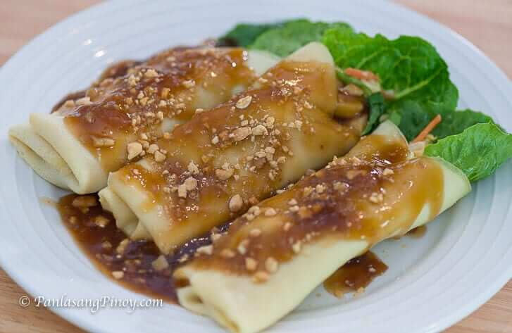

|  |
| Ingridients | Lumpia wrapper 2 Julienne Cabbage ½ cups of julienne carrots 3 tablespoon of minced garlic |
|---|
| Guide How To Cook lumpiang Sariwa |
| Place the veggies on the lumpia wrapper then roll it, then put the lumpia in a medium heat wait until the lumpia turned golden brown after that drain the lumpia in the kitchen napkins |